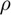
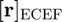
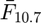
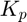

jacchia_roberts
Jacchia-Roberts atmospheric model.
Back to Aerospace Simulation Toolbox Contents.
Contents
Syntax
[rho,n,T] = jacchia_roberts(r_ecef,r_sun_eci,R_eci2ecef,MJD_UT1,MJD_TT,F107_avg,F107,Kp)
Description
[rho,n,T] = jacchia_roberts(r_ecef,r_sun_eci,R_eci2ecef,MJD_UT1,MJD_TT,F107_avg,F107,Kp) determines the atmospheric mass density (), atmospheric constituent number densities (stored in n), and the temperature and exospheric temperature (stored in T). The inputs to this function are the satellite position resolved in the ECEF frame (), Sun position resolved in the ECI frame (), ECI --> ECEF rotation matrix (), modified Julian dates of UT1 () and TT (), centered 81-day average of () for the previous day, 10.7 cm solar flux for the previous day (), and the planetary index 3 hours before current time ().
Input/Output Parameters
| Variable | Symbol | Description | Format | Units | |
| Input | r_ecef | satellite position resolved in ECEF frame | 3×1 double |
m | |
| r_sun_eci | Sun position resolved in ECI frame | 3×1 double |
m | ||
| R_eci2ecef | rotation matrix from ECI frame to ECEF frame | 3×3 double |
- | ||
| MJD_UT1 | UT1 (Universal Time 1) | 1×1 double |
MJD | ||
| MJD_TT | TT (Terrestrial Time) | 1×1 double |
MJD | ||
| Kp | planetary index 3 hours before current time | 1×1 double |
- | ||
| F107_avg | centered 81-day average of F10.7 | 1×1 double |
SFU | ||
| F107 | 10.7 cm solar flux for previous day | 1×1 double |
SFU | ||
| Output | rho | atmospheric mass density | 1×1 double |
kg/m3 | |
| n | - | atmospheric constituent number densities
- nAr (1×1 double, - nH (1×1 double, - nHe (1×1 double, - nN2 (1×1 double, - nO (1×1 double, - nO2 (1×1 double, |
1×1 struct |
m-3 | |
| T | - | temperatures
- T (1×1 double, - T_inf (1×1 double, |
1×1 struct |
K |
See also
exponential | harris_priester | jacchia_roberts | nrlmsise00 | space_weather